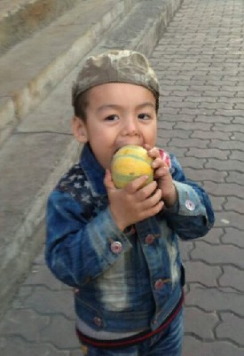

ئالدىنقى يازما
ئالدىنقى يازما كېيىنكى يازما
كېيىنكى يازما
دۇنيا بالىلار كۈنى ھارپىسىدا بىر-ئىككى ئېغىز پاراڭ
ئاپتور:Birzat ۋاقتى:2013-05-29


يېقىندىن بىرى ئالدىراشچىلىق دەپ يۈرۈپ تاس قاپتىمەن ئوغۇللىرىمنى ‹‹كارتون قوچاق›› لارغا تاشلاپ بەرگىلى. باللىرى بار ئاغىينىلەر بىلەن ، دېققەت قىلايلى بۇرادەرلەر، باللارنى سەبىيلىكىدە كارتون دۇنياسى بىلەن يەسلى تارتىۋالمىسۇن، دېيىشتۇق. بۇنداق دېيشىمدە ئىلگىرى باللىرىمغا كارتوننى كۆپ قويۇپ بەرمەيدىغان ۋاقىتلاردا كەچلىرى مەن ئېيتىپ بەرگەن ھېكايىلەرگە قۇلاق سىلىپ ئاڭلايتتى، مەن بىلەن ئويناپ ھاردۇرۋېتەتتى، مەن سىرتقا ماڭغاندا ئارقامدىن ‹‹ئاللاھقا ئامانەت›› دەپ ئۇزۇتۇپ چىقاتتى. ئۆيگە كەلسەم ئويناۋاتقان يېرىدىن ئالدىمغا يۈگۈرۈپ كىلىپ ‹‹ئەسسالامۇ ئەلەيكۇم دادو، كەلدىڭما؟!! كەچتە نېمە ھېكايە ئېيتىپ بىرىسەن!!!›› دەيتتى. ئارىدا ئالدىراش بولۇپ كەتكەندەك بولۇپ باللارغا كۆڭۈل بۆلۈپ بولالماي قالغاندا كومپيۇتېرنى ئۆزلىرى ئىچىشىپ كۆرىدىغان كارتونلارنى ئىزدەپ تېپىپ ئولتۇرۇپ كۆرۈپ كېتىشسە، يېنىغا بىرىپ چاقىرساممۇ ئاڭلىمايدۇ. 3 كەپسىز ئوغۇل ھېچقانداق جىدىلى يوق كارتون كۆرۈپ ئولتۇرۇپ بەرسە خاتون كىشى دېگەنگە خۇيمۇ ياقسا كېرەك، ئۆي ئىشلىرىنى قىلىۋالدىم دەپ شۇنىڭغا خوش. ئەتتىگىنى دۇكانغا ماڭسام ئارقامدىن سۆيۈپ ئۇزىتىدىغان، كەچلىرى ھىكايەمگە قۇلاق سالىدىغان تاتلىق ئوغۇللىرىمنى كارتون دۇنياسىدىكى ئوۋتىمەن، چاشقان مۈشۈك، زەربىدار توشقان، چاقماق كۈچۈكلەرگە تارتقۇزۇپ قويۇپتىمەن. مەن ئويلاۋاتقان بىر ئىش بار.
كارتونلارنى تاللاپ بىرىش، كۆرۈشكە رۇخسەت قىلغاندىمۇ پەقەت بۇيرۇلغان شەرتلەرنى بەجا كەلتۈرگەندىن كىيىن پەقەت كۈندە يېرىم-سائەتتىن بىر سائەتكىچىلا كومپيۇتېر ئويناش. باللىرىمنى سەھرالارغا كۆپرەك ئىلىپ بىرىپ ئوينۇتۇپ قوي-ئۆچكە، توشقان، مۈشۈك، قوغۇن تاۋۇز، قالىغاچ - قۇچقاچ، قۇرت-قوڭغۇز دېگەندەكلەرنى كۆرۈپ تەپەككۇرىنى ئىچش، تەبىئەتتىن ئۈگۈنۈش دېگەندەك، (ئۇنداق بولمىسا، ئۈرۈمچىلىك ئوغۇزدەك چىلگىنى قانداق يېيىشنى بىلمەي غاجاپ يەيدىغان ئىش چىقىدۇ  ). ھەدېگەندە بازاردىن ئويۇنچۇق ئىلىپ بەرمەي، ئىمكەن بار ئويۇنچۇقلارنى بىللە ياساش. مەسىلەن: ياغاچ قىلىچ، ماشىنا، قەغەز ئايروپىلان، رەگەتكە دېگەندەكلەر.
). ھەدېگەندە بازاردىن ئويۇنچۇق ئىلىپ بەرمەي، ئىمكەن بار ئويۇنچۇقلارنى بىللە ياساش. مەسىلەن: ياغاچ قىلىچ، ماشىنا، قەغەز ئايروپىلان، رەگەتكە دېگەندەكلەر.
ماۋۇ ئاستىدىكىسى 2-ئايدا باللىرىم ھەققىدە يېزىلغان خاتىرە ئىدى:
مەن ئۆيدە بولسام كەچقۇرۇنلىرى باللىرىم بىلەن ھىرىپ كەتكۈچە ئوينايمىز، قوغلىشىمىز، چۇقۇرشىمىز، چىلىشىمىز، موللاق ئاتقۇزۇپ دېگەندەك بارچە شوخلۇقلارنى قىلىشىمىز. بىزنىڭ ۋاراڭ-چۇرۇڭلىرىمىزغا چىدىمىغان ‹‹خوجايىن›› ئەمدى بولدى قىلىڭلار، ئۇخلاڭلار دېگۈچە مۇشۇنداق ئوينايمىز. مېنىڭ قىلىقلىرىم ئۇلارنىڭكىگە ماسلىشىپ بالىلارچە شوخلۇق بولسا ئۇلار زىرىكىپ قالماي، ئەكسىچە چوڭ ئادەملەردەك ئېغىر مىجەز بولسام، ياكى ‹‹ئەقىللىق›› لىشىپ قالسام ئوينىغىسى كەلمەيدۇ. بەزىدە ھېكايە ئېيتىشىمىز. ئۆمەر ئىلگىرى پالاكەت ئېيىقنى كۆرگەندىكى تەسىراتىنى ھاياجانلىنىپ سۆزلەيتتى، كىيىن ئوۋتىمەننىڭ قىلىقىرىنى دوراپ ، قاچانلا قارىسا مەن ئوۋتىمەن پالۋان. قىلىچىم بىلەن سىنى ۋايجان دېگۈزىۋېتىمەن دەپ قوللىرىنى بىر قانداق ھەركەتلەرنى چىقىرىپ دوراپ كېتىدىغان بولۇپ قالدى. كىيىن بىر كۈنى ئۆيگە كىرسەم ، دادا، مەن ئەمدى ئوۋتىمەن بولمايمەن، زەربىدال توشقان بولىمەن دەيدۇ. نېمىشقا ئوۋتىمەن بولمايسەن دېسەم، ئوۋتىمەننىڭ قىلىچى بار ئىكەن، زەربىدار توشقاننىڭ نوچى تاپانجىسى باكەن. ھەممىدىن نوچىسى زەربىدار توشقان، دېسە بىلالمۇ ئەگىشىپ مەنمۇ زەربىدار توشقان دەپ قوپىدۇ. شۇنداق قىلىپ بۇ بالىلار قىلىچى باردىن تاپانجىسى بارنىڭ نوچىلىقىنى بىلىۋاپتۇ. قىززىق بىر ئىش بولدى. قۇربان ھېيتتىن كىيىن بۇ ئىككىسى بىزگە تاپانجا ئىلىپ بەر دېۋىدى، ماقۇل دەپ تاللا دۇكىنىغا كىردۇق. ئاكا-ئۇكا ئىككىسى ئويۇنچۇقلارنى كۆرۈپ يۈرۈپ بىردىن تاپانجا تاللاپ دۇكاندانىڭ ئالدىغا ئاپاردى، ئارقىسىدا يىراقتىن قاراپ تۇرسام ئۆمەر تاپانجىنى دۇكاندارغا تەڭلەپ ، مەن دېگەن پولات ئادەم (پولات ئەلەمدار دېمەكچى)، بۇ پولات ئەدەمنىڭ دوستى دەپ ئۇكىسى بىلالنى كۆرسىتىۋاتسا ، بىلالمۇ تاپانجىسىنى تەڭلەپ ، مەن دېگەن پولات ئەدەمنىڭ دوستى دېيشىپ كېتىپتۇ. دۇكاندار بىلەن ئىككىمىز كۈلۈپ تىقىپ قىلىشتۇق. ھازىر بۇ ئىككىسى ئۆزلىرىنى ئوۋتىمەن پالۋان، زەربىدار توشقان ياكى پولات ئەلەمدار دېمەيدۇ. مومىسى ئۆمەر پالۋان بولۇڭ، تېۋىزۇردىكى پەلۋانلار سىزگە يەتمەيدىكەن دېسە، دەسلىۋىدە تازا قايىل بولماي يۈرگەن، بىز بۇلارنى ئەڭ نوچىسى ئۆمەر پالۋان. سەن ئەڭ نوچىسى بالام دەپ يۈرۈپ ئۆزىنىڭ ئەڭ نوچى ئىكەنلىكىگە ھەر ھالدا قايىل قىلدۇق. پالۋان بولۇش ئۈچۈن ئانىسىغا ئۆينى تازىلىشىپ بىرىدىغان، ئەخلەتلەرنى تېرىپ ئەخلەت چىلىكىگە تاشلايدىغان، چېچىنى چۈشۈرگىچە، مۇنچىدا يۇيۇندۇرغىچە يىغلىمايدىغان، تاماقنى ئانىسى يېگۈزۈپ قويمىسىمۇ يەيدىغانلىقىنى چۈشۈنىۋالدى. ئۇكىسىمۇ مەن دېگەن بىلال پالۋان، ئاكام ئۆمەر پالۋان، سەن دادام پەلۋان دەپ كۈلدۈرۈپ يۈرۈيدۇ. بىر كۈنى ئۆمەر كۆرۈپ باقمىغان بىر دوستۇم بىلەن كوچىدا ئۇچرىشىپ قىلىپ بىرىپ كۆرۈشتۇق. ئۆمەر قولىنى ئۇزۇتۇپ ئەسسالامۇ ئەلەيكۇم، مەن ئۆمەر پالۋان دېۋىدى، تونۇشۇم ئاغزىنى ئىچىپلا قالدى.
ئۆمەر ئوغۇل نەۋرىلەرنىڭ ئىچىدىكى تۇنجىسى بولغاچقا ئائىلىمىزدە بىر مەزگىل ‹‹مەركەز›› بولۇپ قالغان، ھەممە ئۇنى ۋاي دەيتتى. لىكىن مەنلا چوڭلارنىڭ ئۇ خىل كۆڭۈل بۆلۈشلىرىگە، ئەركە ئۈگۈتۈشلىرىگە نىسبەتەن باشقىچە يول تۇتۇپ تەلەپنى قاتتىقراق قويۇپ، ياخشى خاراكتىر يېتىلدۈرۈشىگە ئەھمىيەت بەردىم.. ئادەتتە سىرتلارغا چىقسام بىللە ئىلىۋالىمەن. ئۈچ ياشقا كىرگەن مەزگىلدە غۇلجا، كورلا، ئۈرۈمچى بولۇپ 20 كۈنلۈك ساياھەتنى بىللە قىلدۇق. ئۇ ۋاقىتتا بىلال ئۆيدە قالغان ئىدى. 2012-يىل يازدىمۇ خوتەن ساياھىتىگە ئىلىپ باردۇق. كىچىك تۇرۇپلا كۆرگەن يەرلىرى، ئۇچراشقان موھىت، ئادەملەر كۆپ بولدى. شۇڭا ئۆمەر ئۇنچە تارتىنچاق ئەمەس. بىلال يەسلىگە بارغاندىن كىيىن ئاندىن ھازىرقىدەك خىلى ئىچىلىپ، كۆپ نەرسىلەرنى ئۈگۈنۈپ قالدى. ئۇ تېخى كىچىك بولغاچقا كۆپۈنچە ئىشلاردا دەسلەپكى ۋاقىتتا ئاكىسىنى تەقلىد قىلىدۇ. ئۈگەنمەكچى بولغانلىرىنى چۈشۈنۈپ يەتكەندە بولسا ئاكىسىدىن پەرقلىق بەلكى قارشى ھالدا ئۆزگىچە بىر خاسلىقنى ئىپادىلەيدۇ.
ئىشقىلىپ ، بىز ئۇلارنى پەقەت بىر بالا دەپ قارىغان بىلەن ، بالىلارنىڭ دۇنياسى ئاجايىپ مۇرەككەپ ئىكەن. ھېس قىلغانلىرىمنى خاتىرلەپ ماڭىمەن دەيمەنۇ تىرىكچىلىك ئالدىراشچىلىقىدا ۋاقىت چىقمايدۇ. مۇشۇ ئىنكاسنىمۇ شۇنداق بىر جىددىي پەيتتە يېزىپ قالدۇردۇم، مۇشۇمۇ بىر غەنىمەت بولۇپ قالدى.

 يازما مەنبەسى: بېكەت ئەسىرى
يازما مەنبەسى: بېكەت ئەسىرى خەتكۈش: بالىلىق
خەتكۈش: بالىلىق  مۇناسىۋەتلىك يازمىلار:
مۇناسىۋەتلىك يازمىلار: